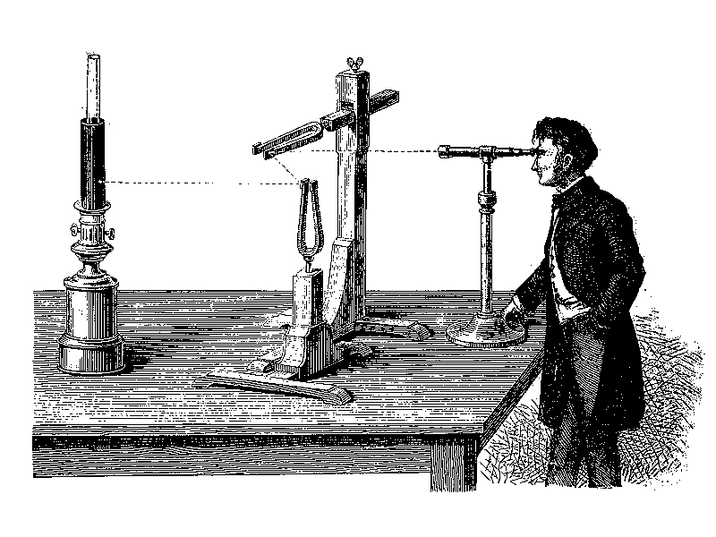
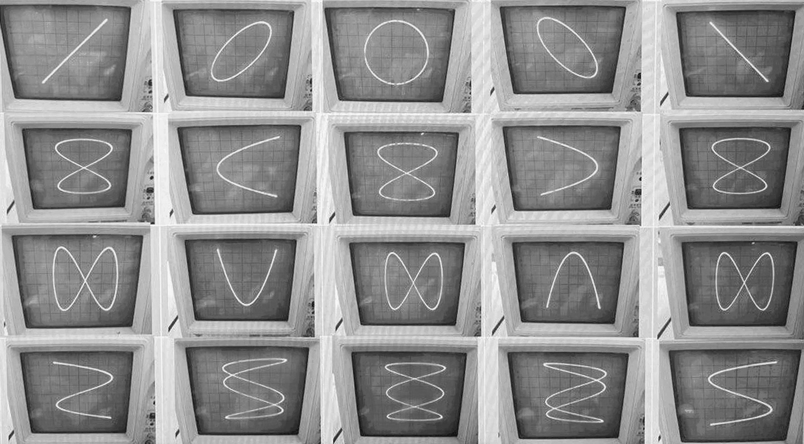

Figure di Lissajous
Le onde sonore
Un'onda sonora è una perturbazione elastico-meccanica che nasce da una sorgente e si propaga nel tempo e nello spazio. Questo fenomeno trasporta energia attraverso un mezzo senza comportare uno spostamento della materia. Un'onda sonora può essere tracciata su un grafico cartesiano posizionando il tempo sull'asse delle ascisse e lo spostamento delle particelle sull'asse delle ordinate.
Caratteristiche principali:
1. frequenza: il numero di periodi compiuti in un secondo, misurato in Hertz (Hz).
2. ampiezza: la distanza massima percorsa dalla particella dalla sua posizione di riposo. Da essa si calcolano la pressione e l'intensità acustica, misurate in decibel (dB).
3. periodo: il tempo impiegato da una particella per compiere un'oscillazione completa e tornare al punto iniziale.
Tipologie di onde:
1. onde sinusoidali: perfettamente regolari e periodiche, in cui i picchi sono speculari alle valli.
2. onde periodiche non sinusoidali: regolari e ripetitive, ma dalla forma complessa e ricca di anomalie.
3. onde aperiodiche: caotiche e prive di regolarità.
Simulatore
Le Figure di Lissajous
Jules Antoine Lissajous (1822–1880) è stato un matematico e fisico francese. Inventò un apparato in grado di visualizzare otticamente le oscillazioni, un fascio di luce veniva riflesso in successione da due specchi fissati su altrettanti diapason vibranti, disposti perpendicolarmente l'uno rispetto all'altro. La proiezione risultante su una parete mostrava delle curve geometriche.

Equazioni parametriche
Dal punto di vista matematico, le curve di Lissajous sono descritte da un sistema di equazioni parametriche in cui la traiettoria bidimensionale è espressa in funzione del tempo. La curva è generata dall'incontro di due moti armonici ortogonali descritti da funzioni sinusoidali sfalsate, dove i rispettivi coefficienti determinano la struttura geometrica della figura e il numero di lobi risultanti.
L'aspetto finale della curva dipende strettamente da tre fattori:
1. rapporto delle frequenze: se il rapporto è un numero razionale (frequenze commensurabili), la curva è chiusa e periodica. Se il rapporto è irrazionale, la curva non si chiude mai. Spesso queste forme ricordano nodi tridimensionali proiettati su un piano.
2. differenza di fase: con un rapporto di frequenze pari a 1:1, la figura varia in base alla fase iniziale: diventa una linea retta se i segnali sono in fase, un'ellisse per sfasamenti intermedi, o un cerchio perfetto se i segnali sono in quadratura (sfasati di 90° con uguale ampiezza). Con altri parametri si può generare persino una parabola.
3. rapporto delle ampiezze: determina le proporzioni del rettangolo di contenimento entro cui la curva oscilla. Se le ampiezze cambiano, la figura si allunga o si schiaccia lungo gli assi, ma la sua struttura topologica rimane invariata.
Simulatore
L'Oscilloscopio
L'oscilloscopio è uno strumento di misura elettronico che visualizza l'andamento dei segnali elettrici. Nella sua modalità standard, mostra un grafico bidimensionale nel dominio del tempo, dove l'asse verticale (Y) indica la tensione e l'asse orizzontale (X) rappresenta il tempo. Mentre i modelli analogici mostrano il segnale in tempo reale in modo fluido e continuo, i dispositivi digitali campionano la forma d'onda, la memorizzano e permettono di effettuare calcoli e letture dirette sui dati.
Modalità X-Y
Attivando la modalità X-Y, la base dei tempi interna dello strumento viene scollegata per trasformare il display in un diagramma cartesiano vettoriale puro. In questo assetto, il tempo scompare dagli assi: il segnale applicato al Canale 1 (CH1) pilota direttamente lo spostamento orizzontale (asse X), mentre quello del Canale 2 (CH2) controlla lo spostamento verticale (asse Y). Questa configurazione nasce originariamente in ambito tecnico per misurare con precisione i rapporti di fase e frequenza tra due segnali diversi.

Oscilloscope Music
L'Oscilloscope Music evolve questo principio tecnico in una forma d'arte audiovisiva, in cui i segnali di un file audio stereo vengono inviati direttamente agli ingressi dello strumento. Sfruttando la modalità X-Y, il canale sinistro muove il tracciato in orizzontale e il destro in verticale; le forme d'onda generate sono così rapide che lo spot luminoso si fonde in un'immagine geometrica continua e definita. I flussi sonori vengono mappati su precise equazioni parametriche, facendo in modo che ogni figura visiva corrisponda matematicamente a un determinato ritmo o timbro musicale.